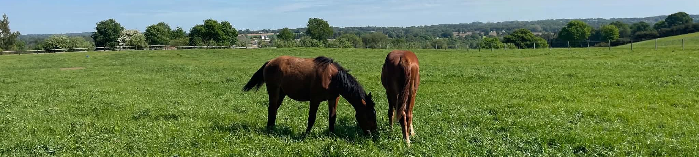
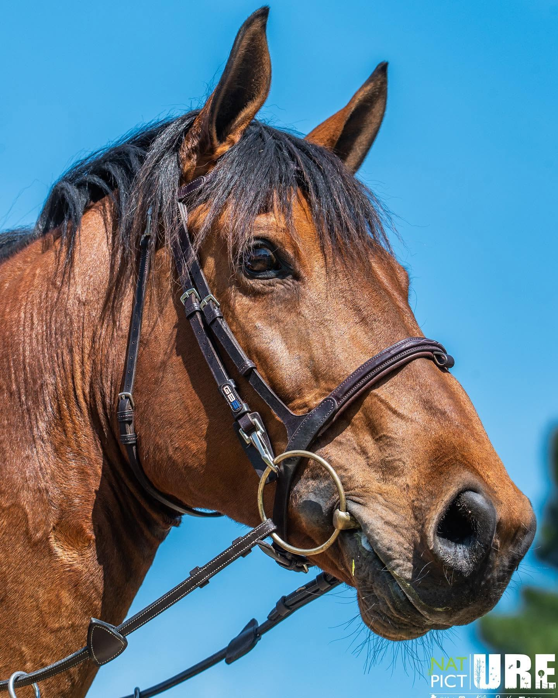

Notre élevage, notre projet, notre histoire
Animés par la passion du cheval et du saut d’obstacles,
nous développons un élevage fondé sur la sélection de belles
origines et la recherche de chevaux de sport modernes.
Notre ambition : faire naître des chevaux réunissant qualités
physiques, intelligence, respect de la barre et mental, en accordant
une attention particulière aux lignées maternelles.
Notre projet repose sur une sélection attentive des origines, avec une importance toute particulière accordée aux lignées maternelles, véritables fondations de tout élevage de qualité. L’aventure a pris une nouvelle dimension en 2025 avec la naissance de nos trois premiers poulains. En 2026, une nouvelle naissance vient enrichir notre élevage et confirmer notre volonté de développer des croisements réfléchis, autour de souches maternelles reconnues.

Nos souches maternelles
Jungle des Forêts, notre souche fondatrice
Au cœur de notre élevage se trouve Jungle des Forêts, notre jument qui poursuit actuellement sa carrière sportive.
Finaliste de la finale des chevaux de 7 ans à Fontainebleau, elle représente parfaitement le type de jument que nous souhaitons valoriser : une jument dotée de qualités sportives et issue d’une génétique soigneusement sélectionnée.
Jungle des Forêts est issue du croisement entre By Ceira d’Ick et Junte des Forêts, par Super de Bourrière.
Son père, By Ceira d’Ick, apporte une génétique tournée vers la performance et le saut d’obstacles, notamment grâce à son ascendance paternelle par Stakkato et à sa mère Fein Cera, médaillée d’or olympique par équipe à Athènes en 2004.
Du côté maternel, Jungle des Forêts descend de Super de Bourrière, fils de Laudanum et de France. Son ascendance associe notamment le sang du célèbre pur-sang Laudanum, reconnu pour son influence majeure dans l’élevage français et pour sa transmission de sang, de réactivité et de courage.
Mais c’est également et surtout sa souche maternelle qui constitue un véritable atout.
Sa deuxième mère, May Flower III, par Uriel, est à l’origine d’une remarquable famille de chevaux de sport. Cette souche maternelle de l’élevage des Forêts a notamment donné naissance à plusieurs performers internationaux, parmi lesquels Zirocco Blue VDL, anciennement Quamikase des Forêts, grand gagnant en CSI 5* et en Coupe des Nations sous la selle de Jur Vrieling.
Cette famille illustre la régularité et la qualité sportive d’une lignée maternelle qui a largement fait ses preuves au plus haut niveau.

Khayla de Kezeg, une deuxième souche maternelle de qualité
Notre élevage s’appuie également sur Khayla de Kezeg, une jument aux origines particulièrement intéressantes, qui apporte une seconde famille maternelle à notre projet.
Sa génétique associe de grandes lignées françaises, avec notamment le sang de Dollar du Mûrier et de Diamant de Semilly.
Fille de Dollar du Mûrier, célèbre étalon Selle Français, elle possède également le sang de Diamant de Semilly du côté maternel, puisque sa mère, Hazelle de Kezeg, est une fille de ce grand reproducteur.
Sa deuxième mère, Hazelle de Rhuys, par Vas-Y-Donc Longane, appartient à la souche maternelle des Rhuys, une famille qui a produit plusieurs chevaux de haut niveau.
Parmi les performers issus de cette famille, on retrouve notamment Verdict de Kezeg et Atticus Diamant, tous deux performers sur des épreuves internationales jusqu’à 1,60 m.
Cette lignée maternelle, associée au sang de Dollar du Mûrier et de Diamant de Semilly, constitue une base génétique particulièrement intéressante pour notre élevage.
Nos naissances
Génération 2025
L’année 2025 a marqué une étape fondatrice de notre aventure avec l’arrivée de nos trois premiers produits.
Trois croisements différents, choisis avec la volonté d’associer des génétiques complémentaires et de rechercher les qualités indispensables au cheval de saut d’obstacles moderne.
Nos premiers poulains :
Génération 2026
En 2026, notre programme d’élevage se poursuit avec Khayla de Kezeg, qui a pris le relais de Jungle des Forêts comme mère de notre nouvelle génération.
Cette année, notre élevage s'enrichit d'un poulain par Pegase van’t Ruytershof, issu d’un croisement associant une souche maternelle reconnue à une génétique moderne et internationale.
Jungle des Forêts ayant été conservée cette année dans son activité sportive, à l’issue de sa saison de 7 ans, nous avons fait le choix de ne pas la mettre à la reproduction afin de privilégier la continuité de sa carrière sportive.
C’est donc Khayla de Kezeg qui a pris le relais comme mère de notre nouvelle génération, avec la naissance d’un poulain par Pegase van’t Ruytershof.
Ce croisement associe la souche maternelle des Rhuys, marquée par les grandes lignées françaises de Dollar du Mûrier et Diamant de Semilly, à une génétique moderne et internationale.
Cette naissance s’inscrit dans notre volonté de développer progressivement notre élevage, tout en laissant à nos juments la possibilité de poursuivre leur carrière sportive lorsque leur potentiel le permet.
Notre philosophie d’élevage
Nous privilégions une approche raisonnée de l’élevage, où chaque croisement est pensé dans une logique de complémentarité et de transmission.
Notre ambition est de développer un élevage à taille humaine, fondé sur la qualité des origines, le potentiel sportif et le respect de nos juments.